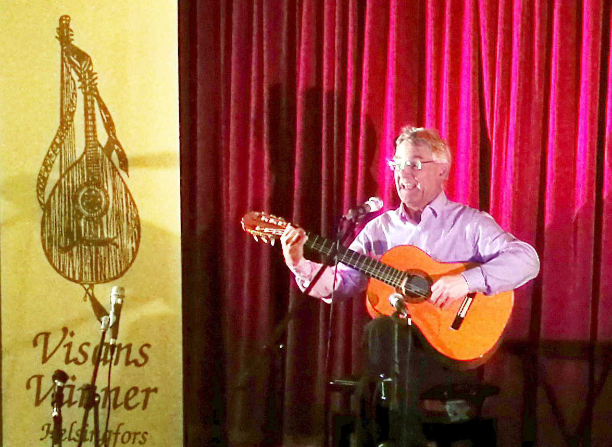
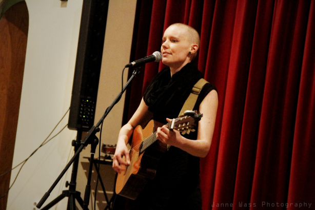

‘För medlemmar’ Category
-
Hösten börjar
September 4, 2018 by henrik
Category För medlemmar | Tags: | No Comments
-
Årsmöte, Pata och PLATSER OCH ORTER
March 13, 2017 by henrik
Tisdagen den 13 mars 2018 klockan 19 håller Sällskapet Visans Vänner sitt korta, spännande och roliga årsmöte, varvid vi ska välja ny orförande efter avgående Maryelle Lindholm. Valberedningen föreslår PATRICK ERIKSSON, en visräv med många strängar på sin bakvända lyra (han är vänsterhänt).

Patrick kallas allmänt Pata och har varit ordförande förr, men inte i Sällskapet Viosans Vänner. När VV i Östnyland grundades visade det sig att ingen av aktivisterna Uffe och Bosse Andersson inte kunde väljas till ordförande eftersom de var svenska medborgare. Sommaröstnylänningen Pata ryckte då in och lotsade den nya förenintgen de första åren.I dag är Pata en av våra mest aktiva medlemmar, och sjunger allt mellan klassiska visor och amerikanska ballader. Hans gitarr heter Signhild. I det civila är Pata arkitekt, som låtsas försöka trappa ner på jobbet för att ha mer tid för visor och familj.
Patas fru Agneta är också medlem och kan ibland lockas att sjunga duett med Pata.
I valberedningens förslag till funktionärer ingår också bl.a. Gustav Klingstedt, Amanda Henriksson, Jonna Sundberg, Rabbe Nevalainen, Jonas Koivumäki, Maryelle Lindholm-Gustavson, Cara Hjelt, Henrik Huldén och Lasse Nybergh.
Category För medlemmar, Knäppaftnar | Tags: | No Comments
-
Visorna rundar av sommaren
August 5, 2015 by henrik
Sommarhälsningar! Trubadurskeppet har seglat färdigt och det drar ihop sig till en ny säsong med knäppaftnar. (Ordet höst kan vänta ett tag).
Trubadurskeppet lyckades över förväntan. Ordförande Maryelle Lindholms text i medlemsbrevet kommer här:
Kära visvänner!
Varmaste sommarhälsningar från Trubadurskeppet Alexandra och turnén från Lovisa i öster till Ekenäs skärgård i väster!
Vår storsatsning under 70-årsjubileumsåret blev en fullträff. Allt klaffade, t.o.m. vädret denna konstiga sommar. (more…)Category För medlemmar, Konserter | Tags: | No Comments
-
Trubadurskeppet 30.6 – 5.7 2015
January 12, 2015 by henrik
Jakten Alexandra seglar från Lovisa till Hangö med nordiska vissångare ombord.
Läs infobrev 1 och ANMÄL DIG om du är intresserad av att medverka
Projektledare Jessica Thurin (trubadurskeppet@gmail.com) svarar på dina frågor.
Kolla också Trubadurskeppets facebooksida.
Category För medlemmar, Konserter, Okategoriserade | Tags: | No Comments
-
Janne Wass hyllar vinylerna
May 28, 2014 by henrik
Janne Wass på Hbl har en egen blogg om finlandssvensk musik. Här är hans hyllning till vinylerna.
Felicia Enckell 26.4.2014 foto Janne Wass
Category För medlemmar, Konserter | Tags: | No Comments
{kind=link}
{kind=link}
{kind=link}